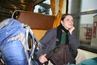
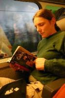
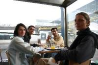
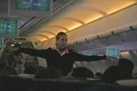
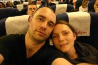

|
22/03/2005
Ca y est, nous voilà partis ! On n'est pas bien loin pour le moment : dans le TER direction Saint Etienne où nous attend notre TGV pour Paris. Nos sacs et nos fringues sont pratiquement comme nous les avions laissés en Décembre 2001, après notre année sabbatique. Depuis, aucun voyage, à peine deux semaines du côté de Vanne en 2003 pour un stage aux Glénans - super d’ailleurs - et quelques jours de ci de là en Bretagne ou en Normandie. Autant dire qu’on éprouve une certaine impatience - pour ne pas dire excitation - depuis quelques semaines. Cela n’a pas été facile de trouver une période et une destination.
Pour la période, il y avait les contraintes liés à l’allaitement de Malo, les disponibilités des parents de Marion qui jouent aux baby-sitters, le calendrier très occupé de Diane et Seb (et oui, on part avec eux!)... Bref pas facile comme dirait Cerise ! Pour la destination, on avait pensé tout de suite à Cuba, et puis après on a hésité : un peu court quinze jour pour un pays qui nous fait envie de puis si longtemps. Et puis, zut! Si cela nous plait tant que ça, on y retournera...
Le moment d’excitation a commencé avec la décision de partir en voyage. Trouver une date, se plonger dans les guides. La Jamaïque? Pourquoi pas, mais un peu compliqué en routards. La République Dominicaine? A condition de sortir des ghettos dorés pour touristes. Et puis bon, pourquoi pas Cuba ! Allez, on y va !
Et puis il y a eu le moment où il a fallu dire au revoir à Cerise et Malo. On n’a beau ne partir que deux petites semaines et faire les gros durs (bon d’accord, surtout moi) n’empêche qu’on avait les yeux un peu humide tout les deux. Surtout lorsque Cerise nous a dit "je vais en voyage avec toi maman". On a du se dépêcher un peu de partir !
Changement de train à Saint Etienne. Trente minutes d’attente, on peut en profiter pour aller acheter le stick à lèvres qu’on a oublié s’il y a une pharmacie dans le coin. Un gars un peu noir qui traîne par là nous accoste : « Excusez-moi, je vous ai entendu parler, il y en a une au deuxième feux là-haut ». Petite balade jusqu’à la pharmacie. La pluie ne réussit pas à nous enlever cette impression que nous avons tous les deux que ce voyage commence bien : c’est un signe ça, c’est sûr, quelqu’un qui nous renseigne comme cela, sans qu’on ait rien besoin de demander et avec le sourire en prime.
Le TGV arrive, un duplex s’il vous plaît ! On s’installe au deuxième, derrière nos place histoire de ne pas avoir se retrouver le nez collé sur la paroi entre deux vitres et pour pouvoir plutôt profiter un peu du paysage. Un des gars à qui on a piqué la place arrive. On lui dit qu’on va bouger, mais il ne nous laisse même pas finir notre phrase. « C’est bien comme ça. De toute façon, moi, je vais dormir. J’espère juste que je ne vais pas vous embêter : je ronfle ! » Encore un gars sympa ! Décidément, ça sent la liberté du voyage ! Est-ce nous à qui le seul fait de se sentir libérés du stress qui accompagne le quotidien ouvre l’esprit, ou sont-ce les gens qui se sentent un élan de sympathie en voyant nos vieux fringues un peu pourris ? En plus, le gars de la SNCF qui nous a vendu nos billets nous a demandé si on avait moins de 25 ans pour les réductions jeunes ! Trop sympa, on en a 10 de plus ! Là aussi, sont-ce nos fringues pourris, nos cernes qui peuvent faire croire à une série de nuits blanches en boite, ou un élan de sympathie pour nous faire plaisir ?
20H30. On arrive à Paris. Le Gégé qui nous héberge pour la nuit assiste à un concert ce soir. On va manger un bout et il nous rejoindra un peu plus tard. On entre dans un snack grec. Enfin, c’est ce qui est écrit sur l’enseigne, parce que, à peine entré, on voit sur tous les murs des photos de déserts et de villes maghrébines. Renseignements pris, il s’agit de la Tunisie, pays dont l’un des serveurs grecs est fier de nous parler, c’est sa ville natale ! Ambiance dépaysante. Les gars (qui mesurent 3 mètres à eux deux) s’engueulent un peu. L’un augmente sans arrêt le volume du radiocassette pourri qui passe du raï à donf. Le son n’est vraiment pas terrible. Une vraie cassette à bande magnétique, qui ralentit et augmente sans raison en donnant à chaque titre une sonorité unique. L’autre baisse le volume dès qu’il passe devant. Le volume monte. Baisse. Le ton monte. Ca parle arabe. Au milieu de l’engueulade on reconnaît juste un : « t’es pas à la maison mon frère », en français dans le texte. On rejoint Gégé dans la brasserie en face de la gare. Une petite bière. Voiture jusqu’à Châtillon. Dodo dans nos sacs de couchages tout neufs. Léger. Ultra léger même : 650 grammes. Température de confort : 15°C. A Cuba, cela devrait aller !
23/03/2005
Lever à 7H00. Départ à 7H30 de Châtillon. On retrouve Diane et Seb pour un petit déjeuner avec Gégé à Orly. Et puis on embarque. Un peu à la dernière minute si on considère la queue qu’il y a devant la porte d’embarquement. Premier vol jusqu’à Madrid. Premier contact avec la langue espagnol pour demander à quel endroit on embarque pour Cuba. Et puis pour trouver à manger aussi. Tout le monde n’est pas aussi souriant que la serveuse du self-service dans lequel on pose nos sacs. Mais cela n’est pas grave, on a de la bonne humeur à revendre : on part à Cuba !
Après un repas pas mauvais, on se retrouve dans le second avion. Il est plein à craquer ce qui explique sans doute qu’on n’a pas pu échanger nos places contres des places hublots (ventana). Ca sent un peu la transpiration et la température monte en même temps que les passagers. Vivement le décollage qu’ils mettent la climatisation ! Cela arrive un peu plus tard. Une heure plus tard précisément. Le pilote parle longuement mais rapidement. Il dit plusieurs fois le mot "lluvia" la pluie. C’est vrai qu’il pleut. Est-ce pour cela le retard ?
Après un vol qui pue un peu des pieds et du reste aussi d’ailleurs (même les écouteurs sont payants chez Air Europa) on arrive à la Havane en compagnie d’un groupe d’italien a priori fort peu aimable (il sont particulièrement désagréables avec notre steward sosie de Pierre Palmade). Pour une raison qu’on ignore encore, le décalage horaire n’est pas de 6 heures comme écrit un peu partout mais de 5 heures seulement. Il est donc bien 20H45, heure prévue avec 6 heures de décalage ou avec 5 heures et une heure de retard avec la lluvia ! Sont fort ces cubains !
Passage à la douane. La jeune fille fonctionnaire fait son boulot avec beaucoup de sérieux. C’est d’ailleurs l’air qu’elle essaie de se donner entre deux sourires amusés. Pas question de passer à deux en même temps. « Only one ». Et puis lorsque c’est notre mon tour de passer, elle me fixe attentivement en alternance avec la photo de notre passeport. Elle avait fait la même chose à Marion qui vient de passer devant moi. Pas de doute c’est bien nous !
C’est seulement après le contrôle qu’on récupère nos sacs. On se dirige vers la sortie. Un gars en uniforme nous demande les tickets de nos sacs. Première fois que je vois cela dans un aéroport. Au moins personne ne pouvait nous piquer nos sacs sur les tapis roulants. Il faudrait faire cela dans tous les aéroports, non ?
Avant de sortir, une ou deux personnes nous proposent des taxis, on refuse, ils n’insistent pas. Une fois dehors, une dame en uniforme et talkie-walkie nous indique un taxi. C’est 20 pesos. Sous-entendu 20 pesos convertibles. Une monnaie cubaine qui vaut exactement 1 dollar. Le dollar n’est plus utilisable à Cuba depuis 2 ou 3 mois. Ainsi l’a décidé Fidel. On fait donc le change. Un dollar pour un peso, enfin si on enlève les 10% que se prend le bureau de change. Bon business pour le gouvernement ça !
Un taxi nous amène jusqu’à la Havane. Une grande avenue presque déserte, presque toute droite, sur laquelle le taxi roule au moins à 80 Km/h ! On est en ville... Le chauffeur cherche l’adresse de notre casa particular (chambre chez l’habitant) qu’on lui a indiqué. C’est marrant, il y a des trucs, tu as beau les lire et les comprendre, cela ne te marque as tant que tu ne les as pas vu. Dans le guide, ils parlent de l’état de la Havane et plus particulièrement du quartier dans lequel le taxi semble se perdre, Habana Centro, en des termes un peu ... rude : « maisons délabrées ... on se croirait un peu à Beyrouth en temps de guerre ». Effectivement, le quartier, pratiquement désert à cette heure nocturne, fait un peu coupe gorge ! « T’es sûr de l’adresses ? » On s’arrête à l’adresse indiquée devant une énorme porte en bois bien fermée. Pas de pancarte ou autre indication qu’on est bien devant un endroit où l’on peut dormir. On sonne et une vieille dame finit par venir nous ouvrir. David, le gars qui tient la maison n’est pas là mais elle lui téléphone. On attend dans un énorme vestibule. David finit par arriver. Chez lui, c’est complet, mais bien vite il nous dégote deux chambres... juste en face, où nous attend Jesus. Avec sa femme, ils vivent au dessus de l’appartement qu’il s’apprête à nous louer : un salon où trône la téloche, une superbe cuisine un peu vieillotte, une salle de bain proprette et deux chambres avec la clim. Jesus enregistre nos passeports. Il est super bavard et nous montre fièrement tous les noms et nationalités des gens qui sont passés chez lui. Et ils sont nombreux !
1H30, on finit par aller se coucher. En France il est 6H30 du matin : on est explosés !
Suite du voyage : Premier jour à la Havane
|

St Etienne - Paris
TER direction Saint Etienne
|

St Etienne - Paris
TGV pour Paris
|

Paris
|

Paris - Madrid
|

Madrid - La Havane
|
Suite du voyage
|
|


{kind=link}
{kind=link}
{kind=link}
{kind=link}
{kind=link}